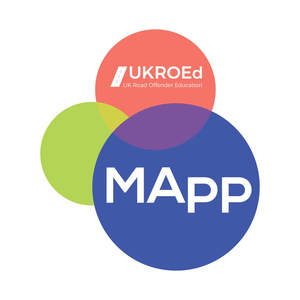

Trade Mark Journal No.2025/017 25 April 2025
UK00004187296 10 April 2025 (9,35,38,41,42)

- Class 9
- Computer software, computer programs and software applications in relation to road safety, driving instruction and training; computer software, computer programmes and manuals (downloadable) in electronic format for use in relation to road safety, driving instruction and training.
- Class 35
- Operational business assistance to enterprises and business consultancy; compilation and provision of business information; provision and analysis of business advice and information; data processing; provision of information relating to business consultancy via a helpline; information, consultancy and advice in relation to the foregoing services; the provision of the foregoing services and information relating thereto on-line, from a computer database or via any other communications; all of the aforesaid in the field of road safety, driving instruction and training.
- Class 38
- Electronic bulletin board services (telecommunication services) in relation to road safety, driving instruction and training; providing online forums for communication on topics of road safety, driving instruction and training; providing online chat rooms, email and instant messaging services, and electronic bulletin boards in relation to road safety, driving instruction and training; electronic mail; electronic text transmission; message sending; transmission of messages and images (computer aided) in relation to road safety, driving instruction and training; providing access to databases in relation to road safety, driving instruction and training; information, advice and consultancy services relating to all the aforesaid.
- Class 41
- Education and training services; provision of seminars, courses and workshops; training courses; certification training services; online publishing of training materials; electronic publishing of course materials; all of the aforesaid in the field of road safety, driving instruction and training.
- Class 42
- Design and development of computer software; design and development of computer systems; design and development of data processing programs and systems; computer programming; computer systems and software analysis and consultancy; computer and technical consultancy; installation, maintenance and support of computer software and systems; computer software project management services; information distribution and management services; creating, maintaining and hosting Web sites; hosting software and databases for others; providing an online website featuring and providing temporary use of non-downloadable computer software and software applications; software as a service (SaaS) services, including the provision of online software; online data storage; electronic data storage; hosting of software as a service (SaaS); platform as a service (PaaS) services; providing virtual computer systems and virtual computer environments through cloud computing; online provision of web-based software; rental, design, creation and updating of computer software and computer databases; computer consultancy services; provision of information relating to computer software and computer systems via a helpline; information, consultancy and advice in relation to the foregoing services; the provision of the foregoing services and information relating thereto on-line, from a computer database or via any other communications; electronic data storage; all of the aforesaid in relation to the field of road safety, driving instruction and training.
UKROED Limited
Representative: Sonder & Clay